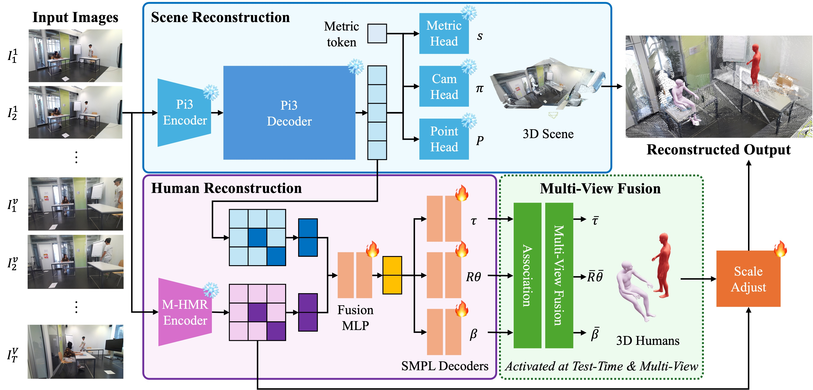
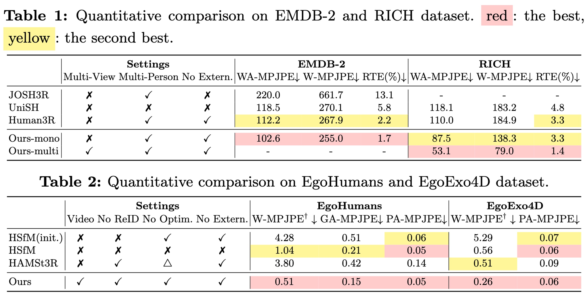

Recent advances in 3D foundation models have led to growing interest in reconstructing humans and their surrounding environments. However, most existing approaches focus on monocular inputs, and extending them to multi-view settings requires additional overhead modules or preprocessed data. To this end, we present CHROMM, a unified framework that jointly estimates cameras, scene point clouds, and human meshes from multi-person multi-view videos without relying on external modules or preprocessing. We integrate strong geometric and human priors from Pi3X and Multi-HMR into a single trainable neural network architecture, and introduce a scale adjustment module to solve the scale discrepancy between humans and the scene. We also introduce a multi-view fusion strategy to aggregate per-view estimates into a single representation at test-time. Finally, we propose a geometry-based multi-person association method, which is more robust than appearance-based approaches. Experiments on EMDB, RICH, EgoHumans, and EgoExo4D show that CHROMM achieves competitive performance in global human motion and multi-view pose estimation while running over 8x faster than prior optimization-based multi-view approaches.


Explore the reconstructed humans and the scene interactively.
Given multi-view video, CHROMM reconstructs coherent human meshes and the surrounding scene in diverse settings.
CHROMM can also be applied to a monocular set up.
@article{kim2026chromm,
author = {Kim, Sangmin and Hwang, Minhyuk and Cha, Geonho and Wee, Dongyoon and Park, Jaesik},
title = {Coherent Human-Scene Reconstruction from Multi-Person Multi-View Video in a Single Pass},
journal = {arXiv},
year = {2026}
}